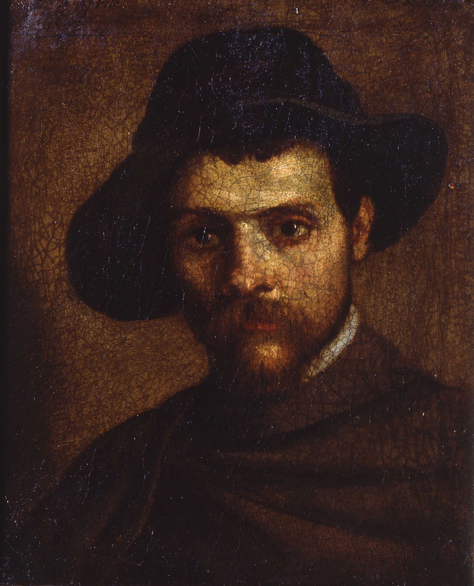

Componenti principali: Ludovico, Agostino e Annibale Carracci
Periodo: XVI–XVII secolo
Ruolo: Pittori, fondatori dell’Accademia degli Incamminati
I Carracci furono protagonisti della pittura barocca bolognese e rivoluzionarono lo stile pittorico con un ritorno al naturalismo. Molto citati da Oretti per la presenza delle loro opere nelle collezioni nobiliari.